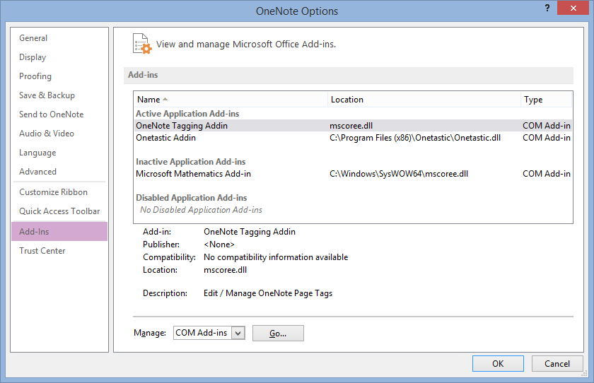
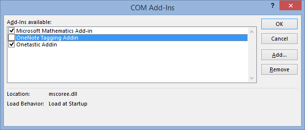
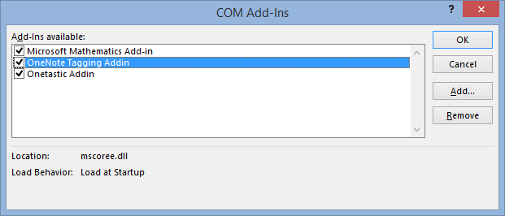

The Tagging Kit Command Group Does Not Show up in the OneNote Ribbon Bar

If the new commands do not show up, _OneNote_probably was still running while you where installing the tagging kit add-in. To fix this, follow the steps below and restart the tagging add-in:
In _OneNote_click
File -> Options -> Add-Ins. The tagging kit add-in should be listed like so: Click on the Go at the bottom of the page.
On the COM Add-Ins dialog turn off the tagging kit add-in and click OK: 
Reactivate the add-in by opening the COM Add-Ins dialog again. Select the tagging add-in and click OK: 
With any luck the add-in should be working now.